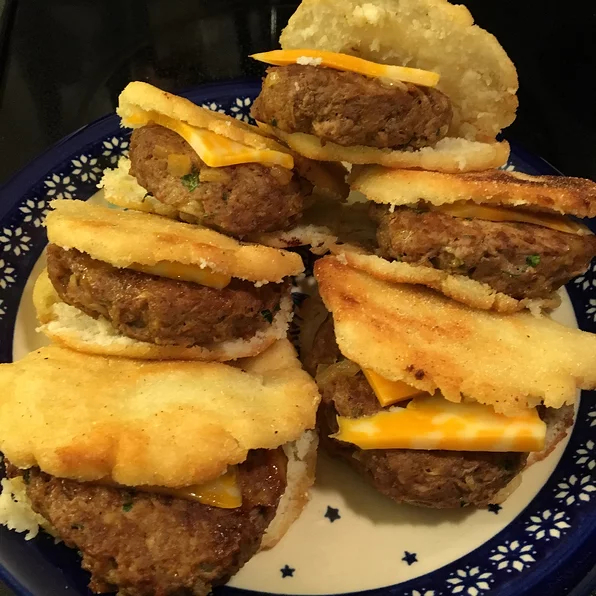

Arepas

Fried arepas
Arepa is a type of food made of ground maize dough, eaten in the northern region of South America since pre-Columbians times,
and notable primarily in the couisine of Colombia and Venezuela.
It is commonly eaten in those countries and can be served with accompaniments such a cheese, cuajada, various meats, chicken,
avocado, etc. In this recipe we'll use caramelized plantains and salty goat feta.
Ingredients (yields 8 servings)
- 2 1/2 cups lukewarm water
- 1 teaspoon salt
- 2 cups pre-cooked white corn meal
- 1/4 cup vegetable oil, or as needed
Steps
- Stir water and salt together in a bowl. Gradually stir corn meal into water with your fingers until mixture forms a soft, moist, malleable dough.
- Divide dough into 8 golf ball-size balls and pat each one into a patty about 3/8-inch thick.
- Heat oil in a skillet over medium heat until shimmering. Working in batches, cook corn patties in hot oil until golden brown, 4 to 5 minutes per side. Transfer cooked arepas to a paper towel-lined plate to drain until cool enough to handle.
- Slice halfway through each cake horizontally with a thin serrated knife to form a pita-like pocket.